Connectors
Google® Pub/Sub® Connector
Prerequisites
- Google Cloud account with the Pub/Sub API enabled
- A Google Cloud project with at least one Pub/Sub topic
- A Google Cloud Service Account with the IAP-secured Web App User role (or Pub/Sub Publisher role) in IAM
RFC Destinations
Create two HTTP RFC destinations (SM59, type G):
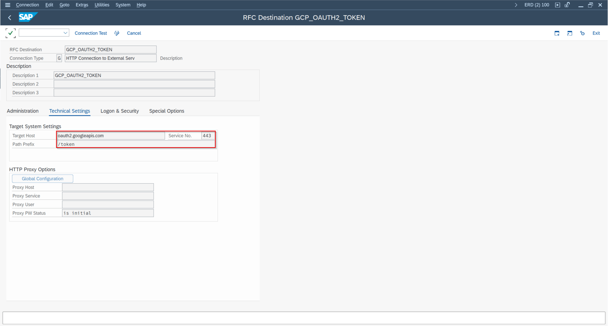
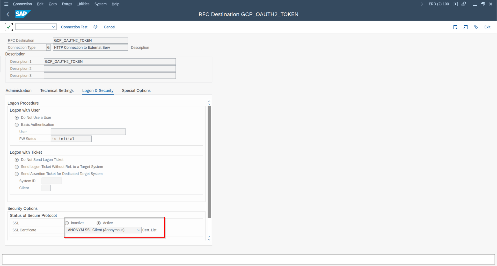
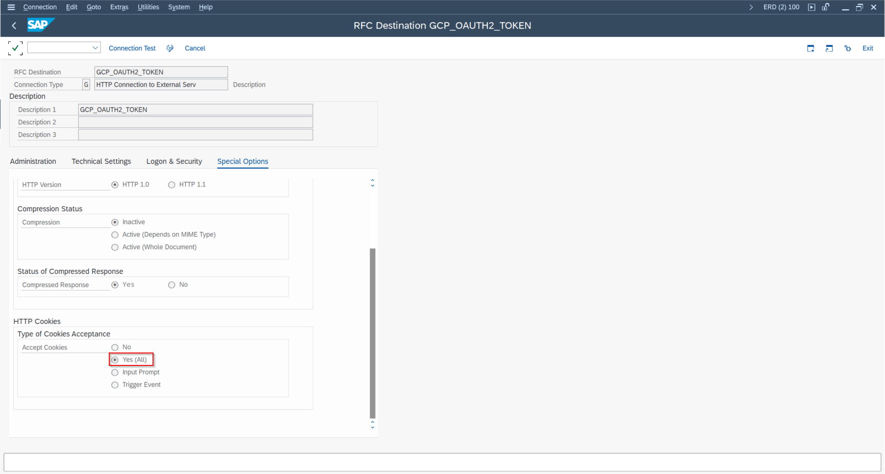
- OAuth endpoint:
oauth2.googleapis.com– used for JWT-based OAuth token retrieval - Pub/Sub endpoint:
pubsub.googleapis.com– the main messaging endpoint
Certificate Import
Import the required GlobalSign root and intermediate certificates into STRUST (SSL Client Standard):

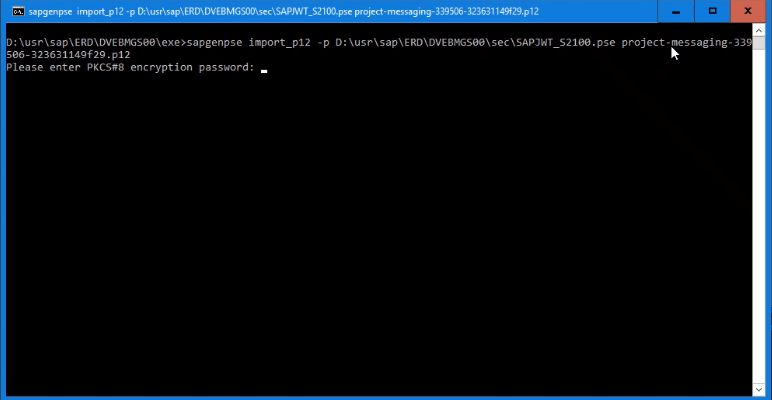
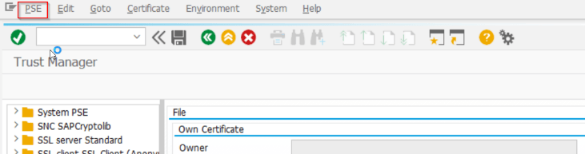
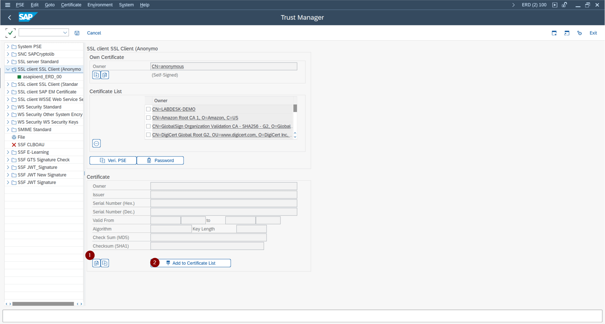
- GlobalSign Root CA
- GlobalSign RSA OV SSL CA 2018
Service Account Setup
- In Google Cloud IAM, create or select a service account and download its P12 certificate.
- In ABAP, create an SSF application in the
SSFAPPLICtable (transaction SSFA) for the Google certificate. - Import the P12 certificate file into STRUST using PSE Import. On older ABAP releases use
sapgenpse import_p12to create the PSE first.
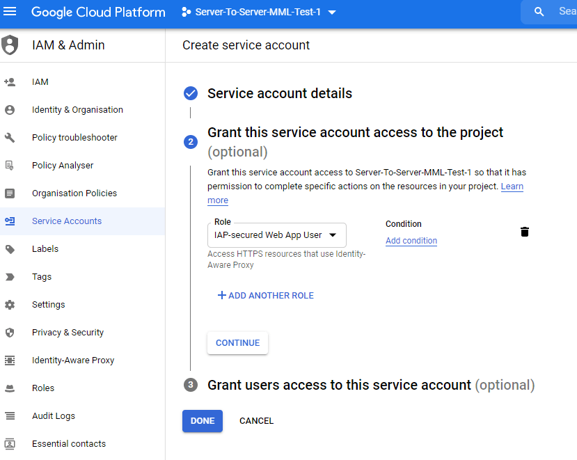
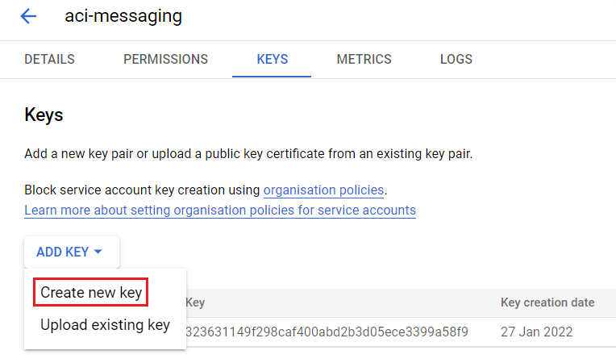
Cloud Instance
In /ASADEV/ACI_SETTINGS, create a cloud instance with:
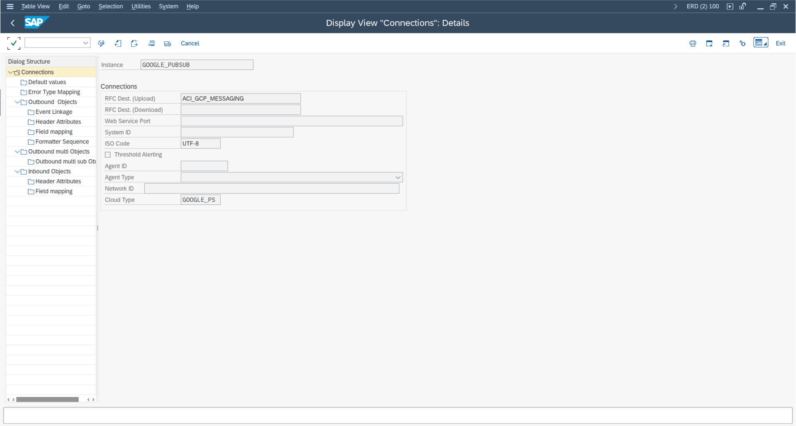
| Field | Value |
|---|---|
| Cloud Adapter | /ASADEV/CL_ACI_GPUBSUB_HANDLER |
| Cloud Type | GOOGLE_PS |
| RFC Destination | Pub/Sub RFC destination |
Set the following default values for the instance:
| Default Value Key | Value |
|---|---|
GCP_EMAIL_SERVICEACCT_JWT_ISS | Service account email address |
GCP_TOKEN_DESTINATION | OAuth RFC destination name |
GCP_SSF_PROFILE | Name of the SSF application created in SSFA |
Outbound Configuration
Two function module combinations are available for outbound messaging:
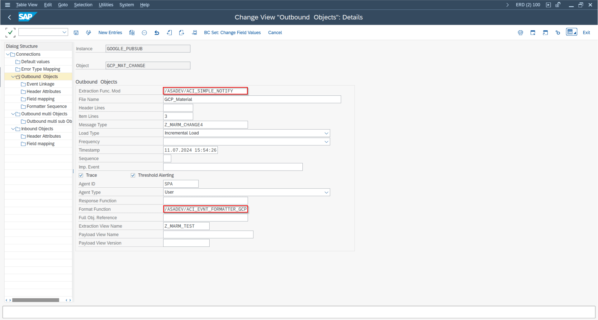
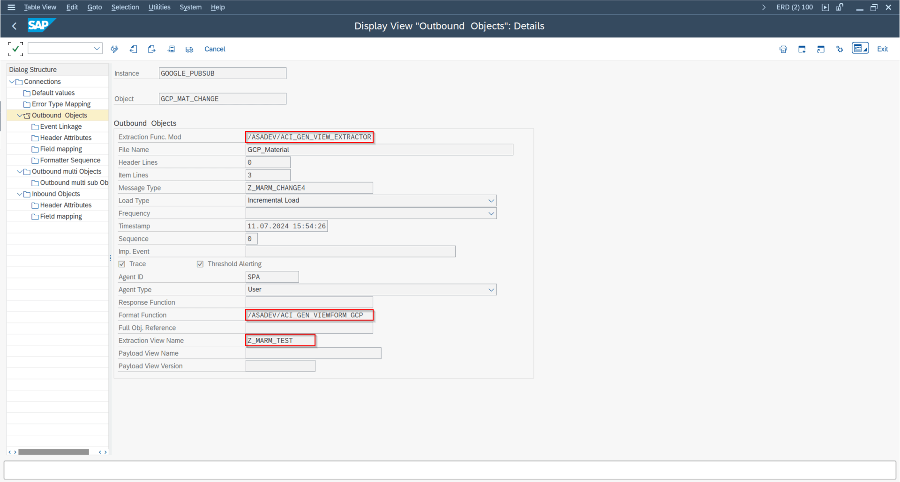
| Purpose | Extractor FM | Formatter FM |
|---|---|---|
| Simple notifications | /ASADEV/ACI_SIMPLE_NOTIFY | /ASADEV/ACI_EVNT_FORMATTER_GCP |
| Payload Designer / DB view | /ASADEV/ACI_GEN_VIEW_EXTRACTOR | /ASADEV/ACI_GEN_VIEWFORM_GCP |
Set the header attribute GOOGLE_TOPIC to the full Pub/Sub topic resource name, e.g. projects/my-project/topics/my-topic.
Custom Message Attributes
As of release 9.32507, you can add custom metadata attributes to Pub/Sub messages. This is configured in the Field Mapping of the outbound object:
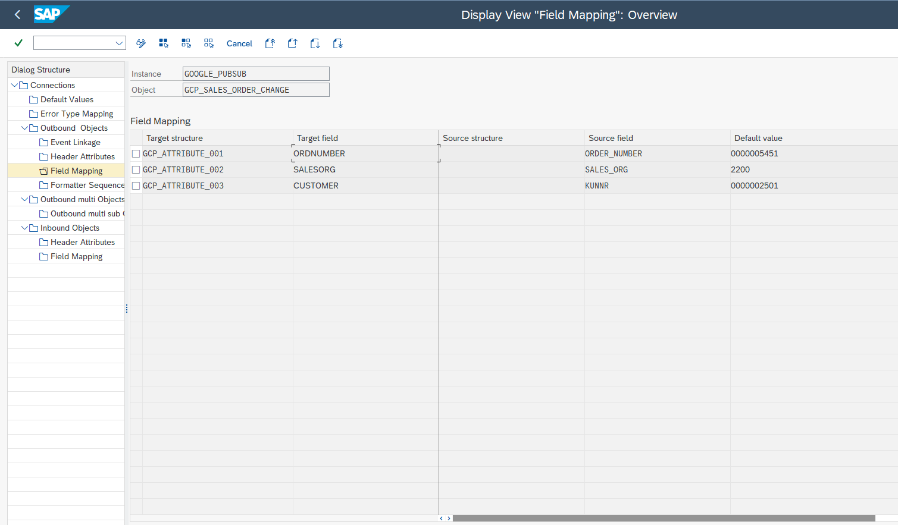
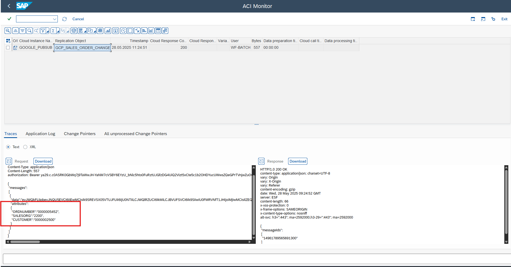
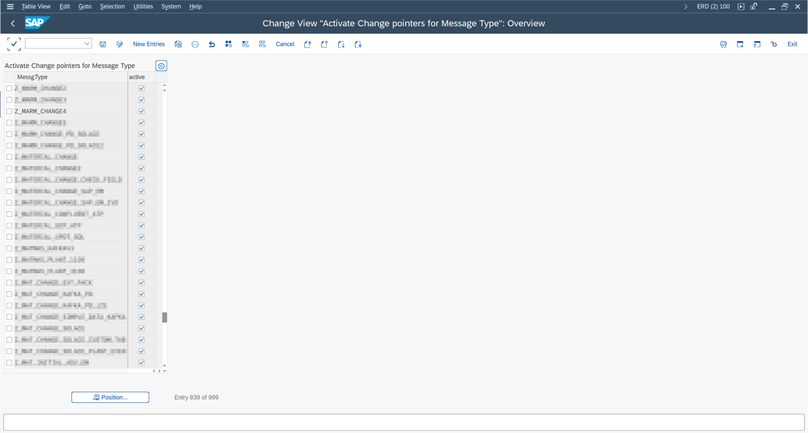
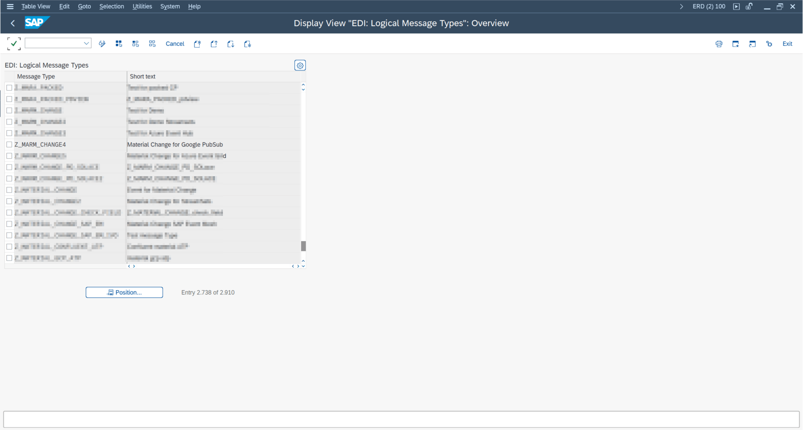
- Source Field: SAP field from the extract view (or a constant value)
- Default Value: Static attribute value
- Target Field: Attribute key name in the Pub/Sub message
The resulting message will include an attributes object alongside the data field in the Pub/Sub message envelope.